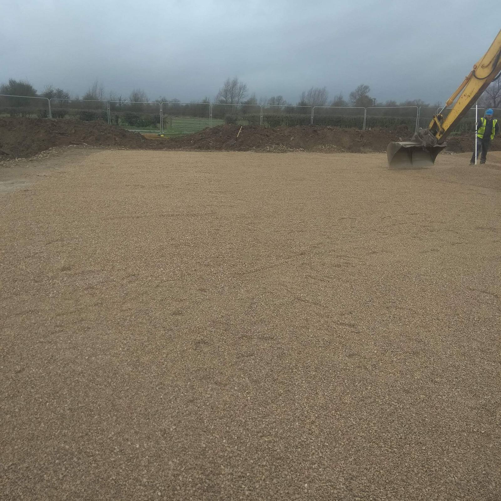

Straight dealing.
Prices that mean what they say, programmes we intend to keep, and problems raised early rather than buried in a valuation.
Thirty years of groundworks and development in and around Swindon — a company that has stayed in business by doing the work properly and dealing with people straight.
E. P. Keogh Contractors Ltd was established in Swindon in 1995 and has traded continuously since.
The company started in groundworks and has never left it — excavation, foundations, drainage, roads and external works for main contractors and developers across Swindon and Wiltshire. Over the same period it has developed property in its own right, taking schemes from bare ground to completion as principal.
That combination is deliberate. Contracting keeps the firm sharp on price, programme and site discipline; developing means it carries the owner's view of quality onto every site it touches. Thirty years on, the company is what it set out to be — an established local firm with the plant, the people and the record to take on serious work, and no interest in pretending to be anything else.
Prices that mean what they say, programmes we intend to keep, and problems raised early rather than buried in a valuation.
The firm runs its own kit and employs its own crews. Control over both is what makes reliability something we can actually promise.
We develop as well as contract, so every job gets finished to the standard we'd demand if we were keeping it.

If you're weighing us up as a subcontractor or as a developer, we're easy to assess — ask around, or ask us directly.